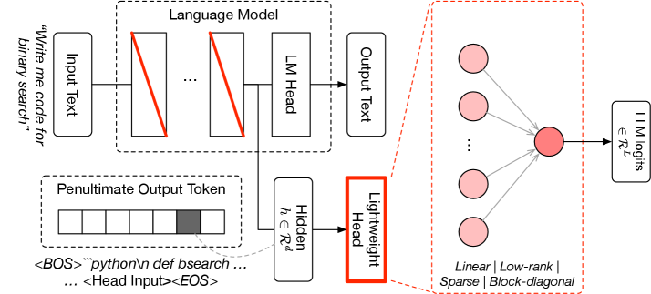
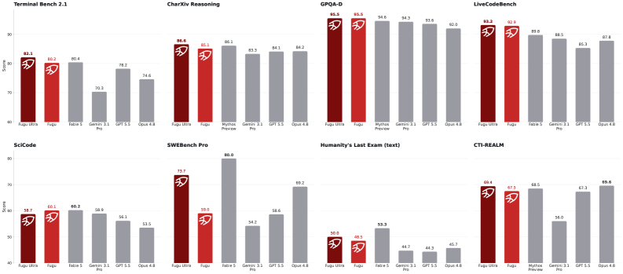
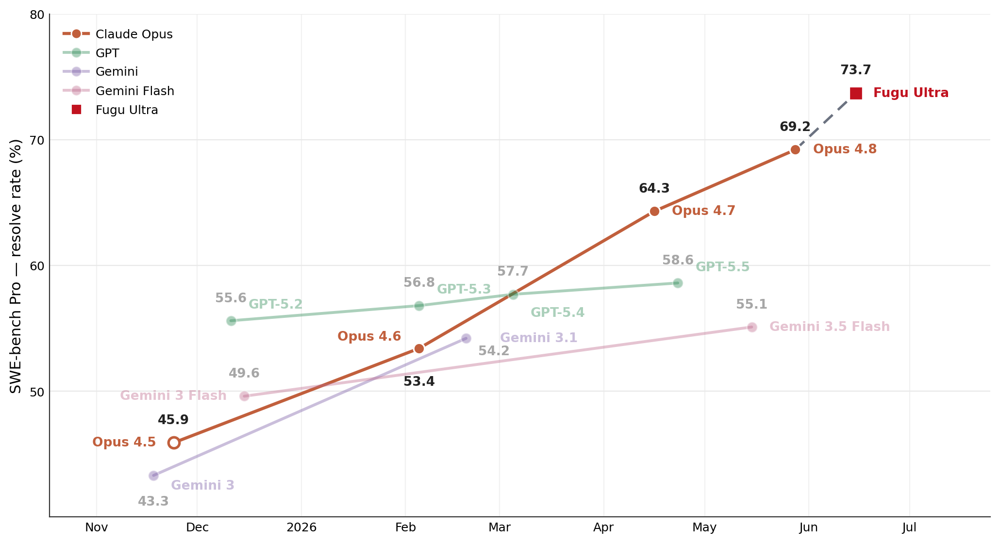
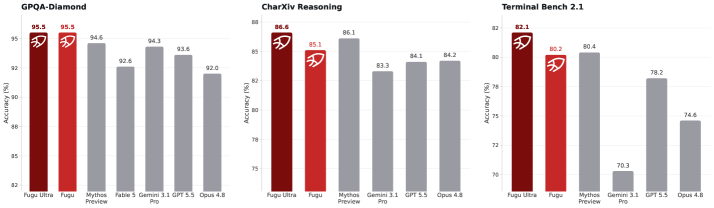
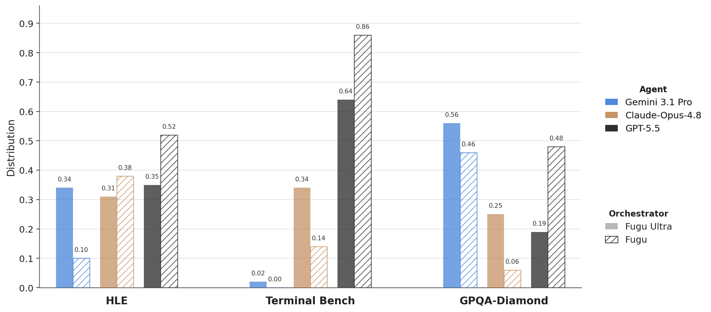
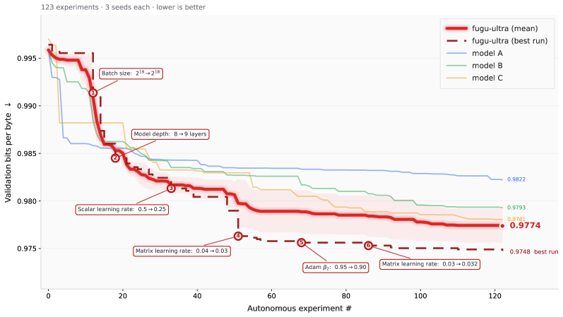
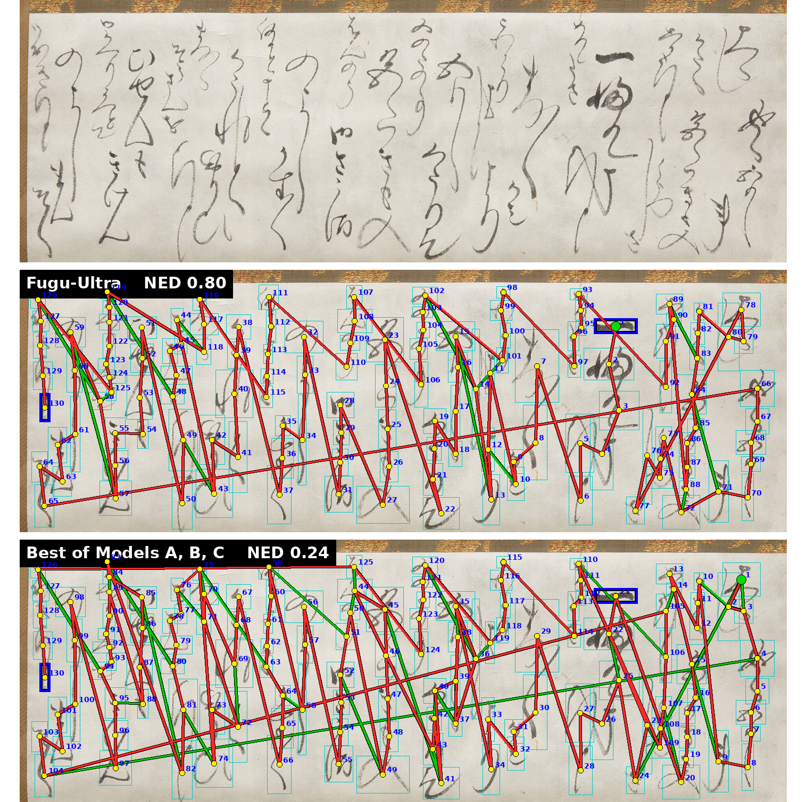
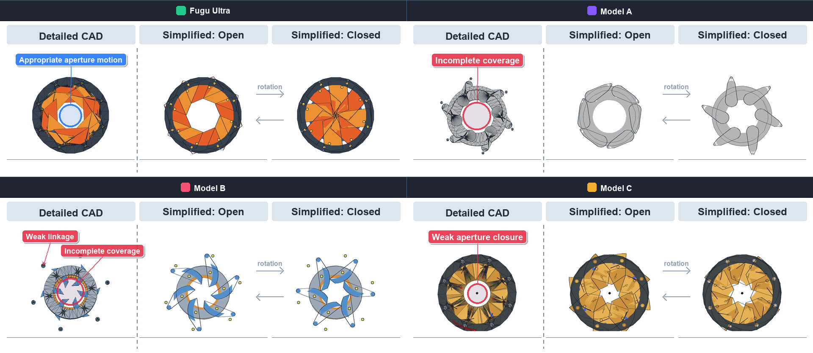
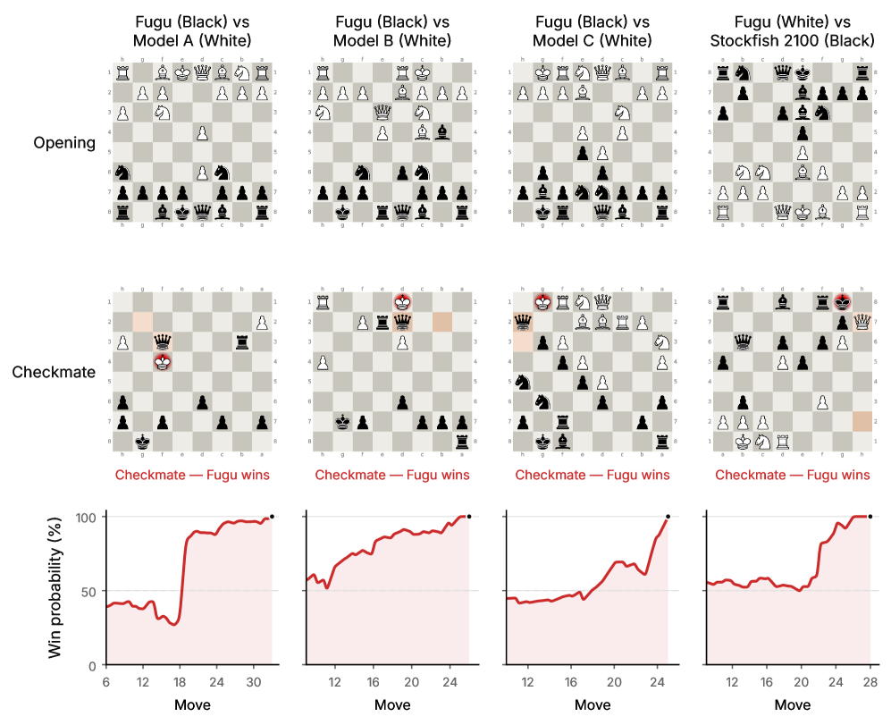
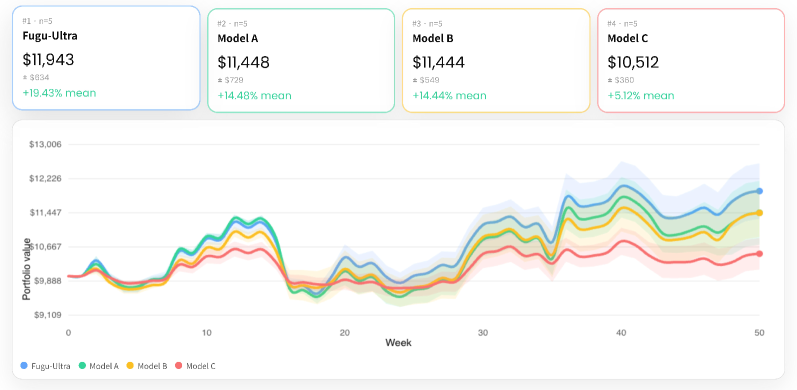

Sakana AI's Fugu and Fugu-Ultra are not new foundation models but orchestrator language models that decide which frontier model(s) to call. This note walks through the technical report (arXiv:2606.21228): design, training and results. Sakana AI의 Fugu와 Fugu-Ultra는 새 파운데이션 모델이 아니다. 어떤 프론티어 모델을 부를지 결정하는 오케스트레이터 언어 모델이다. 이 글은 테크니컬 리포트(arXiv:2606.21228)를 바탕으로 구조, 학습, 결과를 정리한다.
An LLM that does not answer but decides which other model(s) answer, hiding a team of frontier models behind one API.답을 내지 않고 어떤 모델이 답할지 결정하는 LLM. 프론티어 모델 여러 개를 API 하나 뒤에 둔다.
A small head beside the LM head that turns hidden state h into L logits, one per worker. Argmax picks the worker; no text is generated.LM head 옆의 작은 head. hidden state h에서 워커마다 하나씩 L개 로짓을 내고 argmax로 워커를 고른다. 텍스트는 생성하지 않는다.
A multi-agent plan generated per query at inference time, unlike fixed Mixture-of-Agents pipelines.멀티 에이전트 계획을 추론 시점에 쿼리마다 생성한다. 고정형 Mixture-of-Agents와 다른 점이다.
Sakana's prior methods. Trinity assigns models and roles via evolution; Conductor designs natural-language workflows via RL. Fugu drops Trinity's roles; Fugu-Ultra scales Conductor.Fugu의 기반인 Sakana의 선행 방법. Trinity는 진화로 모델과 역할을 배정하고, Conductor는 RL로 자연어 워크플로를 설계한다. Fugu는 Trinity에서 역할을 뺐고 Fugu-Ultra는 Conductor를 키웠다.
Fugu-Ultra orchestrates Gemini-3.1-Pro, Claude-Opus-4.8, GPT-5.5. Fable 5 / Mythos Preview appear only as baselines (not publicly accessible). June-2026 lineup, reported verbatim.Fugu-Ultra는 Gemini-3.1-Pro, Claude-Opus-4.8, GPT-5.5를 부린다. Fable 5 / Mythos Preview는 비공개라 비교 대상으로만 나온다.
§4.3 metrics: BPB = bits-per-byte (lower = better), NED = normalized edit distance for kana order (higher = better), HTM = Rubik's half-turn count (lower = better, optimal ≤ 20).§4.3 지표. BPB는 bits-per-byte(낮을수록 좋음), NED는 카나 독순 정규화 편집거리(높을수록 좋음), HTM은 루빅스 큐브 half-turn 수(적을수록 좋음, 최적 ≤ 20).
Most releases are a better answerer; Fugu answers by delegating. Behind one endpoint it decides which frontier model (or team) handles the request, runs that plan and returns the result. The workers (Gemini-3.1-Pro, Claude-Opus-4.8, GPT-5.5) are black boxes: text I/O only, no weights, so it works over closed APIs.
대부분의 모델은 더 나은 답변자지만 Fugu는 위임으로 답한다. 엔드포인트 하나 뒤에서 어떤 프론티어 모델(또는 팀)을 쓸지 정하고 실행해 결과를 돌려준다. 워커(Gemini-3.1-Pro, Claude-Opus-4.8, GPT-5.5)는 블랙박스라 텍스트 입출력만 쓰므로 닫힌 API 위에서도 돈다.
One worker per query, chosen by the selection head. Latency ≈ a single frontier call. For everyday use.쿼리마다 selection head가 워커 하나를 고른다. 레이턴시는 프론티어 단일 호출 수준이고 일상 작업용이다.
A full multi-step workflow (≤5 steps) over the whole pool, per query. Higher latency, reserved for the hardest problems.쿼리마다 풀 전체를 쓰는 다단계 워크플로(≤5단계)를 만든다. 레이턴시가 더 크고 가장 어려운 문제에 쓴다.
Top models are all excellent, but at different things: GPT at math/physics, Claude Opus at software engineering and cybersecurity, Gemini at direct algorithm implementation and niche recall, even within one domain. So combine their strengths instead of training one bigger model.
상위 모델은 모두 뛰어나지만 잘하는 분야가 다르다. GPT는 수학·물리, Claude Opus는 소프트웨어 엔지니어링·사이버보안, Gemini는 알고리즘 직접 구현과 틈새 지식 회상에 강하고, 이 차이는 한 도메인 안에서도 나타난다. 그러니 더 큰 모델을 학습하기보다 강점을 합치자는 것이 리포트의 전제다.
"These observations suggest that the next frontier may not be achieved by any single model alone, but by systems that can identify, combine, and amplify the complementary strengths of many models."
— §1, ¶2 · 원문 보기 (§1)
"We view this kind of model orchestration as a new complementary scaling axis beyond ever larger and expensive language models."
— §1, ¶3 · 원문 보기 (§1)
Three families of prior work combine models, and each hits a wall:
모델을 합치는 선행 연구는 세 계열이 있고, 각각 한계가 있다.
| Prior approach선행 접근 | What it does무엇을 하나 | The wall한계 |
|---|---|---|
| Fixed multi-agent scaffolds (Mixture-of-Agents, multi-round debate)고정 멀티 에이전트 스캐폴드(MoA, 다회차 debate) | Hand-designed interaction structure + a fixed final aggregator model손으로 설계한 상호작용 구조 + 고정된 최종 aggregator 모델 | Bottlenecked when the task is outside the aggregator's expertise (§4.4)과제가 aggregator의 전문 밖이면 병목(§4.4) |
| Routers (e.g. RouterDC)라우터(예: RouterDC) | Single-step route to one model한 모델로 단일 단계 라우팅 | No coordination, no multi-step composition조율도 다단계 합성도 없음 |
| Model merging (weight averaging, TIES, evolutionary merges)모델 머징(가중치 평균, TIES, 진화적 머지) | Fuse in parameter/representation space파라미터/표현 공간에서 융합 | Needs weight/activation access + architectural compatibility → unusable for closed APIs가중치/활성값 접근 + 구조 호환 필요 → 닫힌 API엔 불가 |
Fugu positions itself against merging: the same goal, one level up, with each model as a black box:
Fugu는 자신을 머징과 견주어 설명한다. 머징이 하는 일을 한 단계 위에서, 각 모델을 블랙박스로 두고 한다는 것이다.
"Sakana Fugu can be viewed as a macro-level analogue of model merging. Rather than merging weights or stitching layers, it composes model capabilities at the behavioral level, treating frontier models as black-box agents and learning how to route, coordinate, verify, and synthesize their outputs."
— §2 (Model Merging) · 원문 보기 (§2)
Unlike a self-built multi-agent system, Fugu hides the collective behind one model call, so you don't operate the scaffold.
직접 만든 멀티 에이전트 시스템과 달리, Fugu는 집단 전체를 모델 호출 하나 뒤에 숨겨 사용자가 스캐폴드를 운영할 필요가 없다.
"rather than exposing a multi-agent workflow that users must design, tune, or operate, Sakana Fugu presents the collective as a single model interface."
— §2 (LLM Collective Intelligence) · 원문 보기 (§2)
Lineage: Fugu builds on Sakana's Trinity and Conductor. It simplifies Trinity by dropping roles and scales Conductor to production latency + function calling.
계보로 보면 Fugu는 Sakana의 Trinity와 Conductor를 잇는다. Trinity에서 역할 배정을 빼 단순화했고, Conductor는 프로덕션 레이턴시와 함수 호출까지 스케일업했다.
Fugu never writes your answer. One (partial) forward pass through its backbone yields a hidden state, the selection head turns it into a choice of worker, and that frontier model (Opus / GPT / Gemini) generates the answer over its API. Fugu pays only for the decision, so latency is near a single frontier call; the GPU-heavy compute lives in the workers.
Fugu는 답을 직접 쓰지 않는다. 쿼리가 백본을 (부분) forward pass 한 번 지나 hidden state가 되고, selection head가 이를 워커 선택으로 바꾼다. 답은 선택된 프론티어 모델(Opus / GPT / Gemini)이 API로 생성한다. Fugu의 비용은 결정뿐이라 레이턴시가 단일 호출과 비슷하고, GPU를 많이 쓰는 연산은 워커 쪽에 있다.
Fugu-Ultra has the same two layers, but the decision is a whole plan: the Conductor generates a natural-language workflow, and an execution engine calls each step's worker with its subtask and access-listed inputs (in parallel or recursively), then synthesizes the result. More calls mean more latency and cost.
Fugu-Ultra도 두 겹이지만 결정이 계획 전체다. Conductor가 자연어 워크플로를 생성하면, 실행 엔진이 단계마다 지정된 워커에 서브태스크와 access 입력을 넘겨 호출하고(병렬·재귀 가능) 결과를 종합한다. 호출이 많은 만큼 레이턴시와 비용도 커진다.
Fugu attaches a lightweight selection head after the backbone's final hidden layer, parallel to the LM head. From h ∈ ℝd it emits L logits, one per worker, and argmax (or a sample) picks where the query goes. The head can be Linear · Low-rank · Sparse · Block-diagonal (Figure 2); in every form it is tiny.
Fugu는 백본의 마지막 hidden layer 뒤에 LM head와 나란히 가벼운 selection head를 붙인다. hidden state h ∈ ℝd에서 워커마다 하나씩 L개 로짓을 내고, argmax(또는 샘플)로 쿼리를 보낼 워커를 고른다. head는 Linear · Low-rank · Sparse · Block-diagonal(Figure 2) 중 어떤 형태든 아주 작다.

Selection head beside the LM head, reading h∈ℝ^d.LM head 옆의 selection head. 입력은 h∈ℝ^d. · Figure 2, Sakana Fugu Technical Report (arXiv:2606.21228)
"For a hidden state h∈ℝ^d, the head outputs L logits that score which worker model should be selected for the input."
— §3.1.1 · 원문 보기 (§3.1.1)
Two choices make Fugu fast. No roles: unlike Trinity, the selected model is dispatched as a plain worker, so the decision is just "which model." Logits, not generated text: it applies the head to an early-token hidden state and routes, with no autoregressive decode of its own.
Fugu가 빠른 이유는 두 가지다. 첫째, 역할이 없다. Trinity와 달리 선택된 모델을 평범한 워커로 넘기므로 결정이 "어떤 모델"로 줄어든다. 둘째, 생성 텍스트가 아니라 로짓으로 결정한다. 이른 토큰의 hidden state에 head를 적용해 바로 라우팅하고 자체 디코드는 하지 않는다.
"Unlike Trinity, which additionally assigns one of several roles to the selected model, Fugu always dispatches the query to the selected model as a worker. Removing role assignment narrows the coordination space to model selection alone, which keeps the orchestration decision simple and minimizes the latency overhead of the orchestrator."
— §3.1.1, ¶2 · 원문 보기 (§3.1.1)
"A key design choice is that Fugu uses the orchestrator's logits rather than its generated text."
— §3.1.1, ¶4 · 원문 보기 (§3.1.1)
Where Fugu emits one logit, Fugu-Ultra's Conductor writes a plan: a sequence of steps, each a triple (subtask string, worker id, access list) (what, who, and which prior outputs to feed in). The grammar covers best-of-N, sequential chains and arbitrary parallel tree topologies, and the orchestrator can list itself as a worker (recursion). The scaffold is generated per query at inference time: the "query-adaptive agentic scaffold."
Fugu가 로짓 하나를 내는 자리에서 Fugu-Ultra의 Conductor는 계획을 쓴다. 계획은 단계의 시퀀스이고, 각 단계는 (서브태스크 문자열, 워커 id, access list) 삼중항(무엇을, 누가, 어떤 이전 출력을 받아서)이다. 이 문법으로 best-of-N, 순차 체인, 임의의 병렬 트리 토폴로지를 표현하고, 오케스트레이터가 자기 자신을 워커로 지정할 수도 있다(재귀). 스캐폴드는 추론 시점에 쿼리마다 생성된다. 이것이 "쿼리 적응형 에이전트 스캐폴드"다.
"The Conductor outputs full agentic workflows as natural language that divide an input task, allocate arbitrary subtasks, and define targeted communication strategies to best make use of the agents' complementary capabilities."
— §3.2.1 · 원문 보기 (§3.2.1)
When every workflow agent can call tools, two failure modes appear. Fugu-Ultra handles both:
에이전트마다 도구를 호출하면 두 가지 실패가 생기고, Fugu-Ultra는 둘 다 다룬다.
Each agent's tool trajectory is isolated; it sees others only via the access list. This prevents orchestration collapse, where the first agent to touch the environment dictates everyone's path.에이전트마다 도구 궤적을 격리하고, 다른 에이전트 결과는 access list로만 본다. 환경을 처음 건드린 에이전트가 모두의 경로를 정해 버리는 오케스트레이션 붕괴를 막는다.
Inter-workflow memory across the multi-turn conversation avoids repeated tool calls, while isolation within the current plan is kept.멀티턴 대화에 걸친 워크플로 간 메모리로 같은 도구 호출을 반복하지 않는다. 현재 계획 안의 격리는 그대로 유지한다.
"This intra-workflow isolation is necessary to prevent orchestration collapse, whereby the first agent to interact with the environment sets the trajectory for all future agents, leading to redundant contributions from future agents as they are steered to follow the path initialized by the first agent."
— §3.2.2 (Intra-workflow agent isolation) · 원문 보기 (§3.2.2)
Both start from a pretrained backbone LM (base unspecified). Fugu uses singular-value fine-tuning: decompose selected weight matrices, train only the singular-value scales, keep the orthogonal parts fixed. The training paths then diverge:
둘 다 사전학습된 백본 LM(베이스 미명시)에서 출발한다. Fugu는 특이값 파인튜닝을 쓴다. 선택한 weight 행렬을 분해해 특이값 스케일만 학습하고 직교 성분은 고정한다. 이후 학습 경로는 다음과 같이 갈린다.
| Stage단계 | Fugu (latency) | Fugu-Ultra (quality) |
|---|---|---|
| Stage 11단계 | SFT on single-step tasks: run each worker n× on verifiable tasks, average rewards → softmax soft target over workers → train head + SV-scales to match it (KL).단일 단계 과제 SFT: 검증 가능한 과제에서 각 워커를 n회 실행해 보상 평균 → 워커에 대한 softmax 소프트 타깃 → head+SV 스케일이 이를 맞추도록 학습(KL). | RL with GRPO, from a pretrained checkpoint. Design workflows of ≤5 steps over the pool {Gemini-3.1-Pro, Opus-4.8, GPT-5.5}. Conductor reward; no KL penalty. Mixed public + expert end-to-end environments.GRPO 기반 RL, 사전학습 체크포인트에서. 풀 {Gemini-3.1-Pro, Opus-4.8, GPT-5.5} 위에 ≤5단계 워크플로 설계. Conductor 보상, KL 페널티 없음. 공개 + 전문가 end-to-end 환경 혼합. |
| Stage 22단계 | Evolution (sep-CMA-ES) on real multi-turn coding-agent trajectories (Claude Code / Codex / OpenCode), maximizing terminal reward R(τ)∈{0,1}.진화(sep-CMA-ES): 실제 멀티턴 코딩 에이전트 궤적(Claude Code / Codex / OpenCode)에서 종단 보상 R(τ)∈{0,1} 최대화. | |
| Data데이터 | SFT: large verifiable single-step set (coding, math, reasoning, language, agentic). Evolution/RL: real agent trajectories + expert-built end-to-end agent–user environments (science, engineering, recall, tool use, dialog, planning).SFT: 대규모 검증 가능 단일 단계 세트(코딩·수학·추론·언어·에이전트). 진화/RL: 실제 에이전트 궤적 + 전문가가 만든 end-to-end 에이전트–유저 환경(과학·공학·회상·도구 사용·대화·계획). | |
"Ultra is instructed to design agentic workflows of up to 5 steps using a diverse pool of frontier LLMs that includes Gemini-3.1-Pro, Claude-Opus-4.8, and GPT-5.5. … We train using our Conductor reward detailed in section 3.2.1 with GRPO and without any KL divergence penalty."
— §3.2.3 · 원문 보기 (§3.2.3)
Take the hidden state h at the head-input position (d = hidden size). The head fθ maps it to L scores (L = pool size), and the worker policy is a softmax over those logits: πθ(a | s) ∝ exp( fθ(h)a ). Intuition: a tiny classifier on top of the LM that answers "which expert should take this" in one forward pass, with no text generated.
head 입력 위치의 hidden state h(d=hidden 크기)를 받는다. head fθ가 이를 L개 점수(L=풀 크기)로 매핑하고, 워커 정책은 그 로짓의 softmax다: πθ(a | s) ∝ exp( fθ(h)a ). 직관: "이건 어떤 전문가가 맡아야 하나"를 forward pass 한 번으로 답하는, LM 위의 작은 분류기다. 텍스트는 생성하지 않는다.
For question qi, run each of K workers n times and average per worker: r̄i,j = (1/n)Σk rk. Turn that score vector into a soft target with a temperature-τ softmax: pi(j) = exp(r̄i,j/τ) / Σj' exp(r̄i,j'/τ). Then train head + SV-scales to minimize DKL( pi ‖ πθ(·|qi) ). Intuition: teach the whole ranking with confidence, not just "best worker = label," so the router stays robust when two workers are near-equal.
질문 qi마다 K개 워커를 각각 n회 실행해 워커별 평균을 낸다: r̄i,j = (1/n)Σk rk. 이 점수 벡터를 온도 τ softmax로 소프트 타깃으로 만든다: pi(j) = exp(r̄i,j/τ) / Σj' exp(r̄i,j'/τ). 그리고 head+SV 스케일이 KL 발산 DKL( pi ‖ πθ(·|qi) )을 최소화하도록 학습한다. 직관: "best 워커=라벨"만이 아니라 확신까지 담은 순위 전체를 가르친다. 그래야 두 워커가 비슷할 때도 라우터가 흔들리지 않는다.
Maximize expected terminal reward J(θ) = 𝔼τ∼πθ[R(τ)]: a trajectory τ runs over turns (state = task + transcript + tool feedback, action = chosen worker) up to a budget, with R(τ)∈{0,1} = task done or not. Optimized by sep-CMA-ES: keep a parent θ + step-size σ + diagonal covariance, sample candidate perturbations, score each by averaged terminal reward, recombine the fittest → next parent. Intuition: gradient-free search for when success is sparse/noisy and clean per-step labels are impossible. SFT first puts you in a good region.
기대 종단 보상 J(θ) = 𝔼τ∼πθ[R(τ)]을 최대화한다. 궤적 τ는 turn들을 지나며(상태=과제+대화+도구 피드백, 행동=선택된 워커) 예산까지 진행하고, R(τ)∈{0,1}은 과제 성공 여부다. 최적화는 sep-CMA-ES로 한다. 부모 θ, 스텝 크기 σ, 대각 공분산을 유지하면서 후보 섭동을 샘플하고, 각각을 종단 보상 평균으로 채점한 뒤 우수한 것들을 재조합해 다음 부모로 삼는다. 직관: 성공 신호가 희소하고 잡음이 많아 단계별 라벨을 만들 수 없을 때 쓰는 gradient-free 탐색이다. SFT가 먼저 좋은 영역으로 데려다 놓는다.
Group-Relative Policy Optimization: sample a group of G workflows per query and optimize a PPO-style clipped surrogate, with the advantage group-normalized: Ai = ( ri − mean{r1..G} ) / std{r1..G}. In Fugu-Ultra the KL term β = 0 (no penalty). The Conductor reward is progressive: r = 0 if the workflow can't be parsed, r = 1 if the executed output matches the solution, r = 0.5 if well-formatted but wrong. Intuition: reward workflows that beat their group's average. First produce a parseable plan, then a correct one.
Group-Relative Policy Optimization은 쿼리마다 G개 워크플로 그룹을 샘플하고 PPO식 clipped surrogate를 최적화하되, advantage를 그룹 정규화한다: Ai = ( ri − mean{r1..G} ) / std{r1..G}. Fugu-Ultra에선 KL 항 β = 0(페널티 없음)이다. Conductor 보상은 단계적이다. 워크플로가 파싱되지 않으면 r = 0, 실행 출력이 정답과 맞으면 r = 1, 형식은 맞지만 틀리면 r = 0.5다. 직관: 자기 그룹 평균을 이긴 워크플로에 보상한다. 먼저 파싱 가능한 계획을, 그다음 정답을 내야 한다.
The headline table compares both variants with the three public workers they orchestrate (best bold, second underlined). An orchestrator wins almost every row, against the very models it calls:
대표 표는 Fugu·Fugu-Ultra를 이들이 부리는 공개 워커 셋과 비교한다(최고 굵게, 2위 밑줄). 거의 모든 행에서 오케스트레이터가 자기가 부르는 바로 그 모델들을 이긴다.
| Benchmark벤치마크 | Fugu-Ultra | Fugu | Opus 4.8 | Gemini 3.1 | GPT-5.5 |
|---|---|---|---|---|---|
| SWE-Bench Pro | 73.7 | 59.0 | 69.2 | 54.2 | 58.6 |
| Terminal Bench 2.1 | 82.1 | 80.2 | 74.6 | 70.3 | 78.2 |
| LiveCodeBench (v6) | 93.2 | 92.9 | 87.8 | 88.5 | 85.3 |
| LiveCodeBench Pro | 90.8 | 87.8 | 84.8 | 82.9 | 88.4 |
| Humanity's Last Exam | 50.0 | 47.2 | 49.8 | 44.4 | 41.4 |
| CharXiv Reasoning | 86.6 | 85.1 | 84.2 | 83.3 | 84.1 |
| GPQA Diamond | 95.5 | 95.5 | 92.0 | 94.3 | 93.6 |
| SciCode | 58.7 | 60.1 | 53.5 | 58.9 | 56.1 |
| τ³ Bench — Banking | 20.6 | 21.7 | 20.6 | 8.4 | 20.6 |
| Long Context Reasoning | 73.3 | 74.7 | 67.7 | 72.7 | 74.3 |
| MRCR v2 | 93.6 | 86.6 | 87.9 | 84.9 | 94.8 |
Bold = best, underline = second (paper's markup). GPQA-D: Fugu & Fugu-Ultra tie at 95.5. MRCR v2 is the only row a bare worker (GPT-5.5) wins.굵게 = 최고, 밑줄 = 2위(논문 표기). GPQA-D는 Fugu·Fugu-Ultra가 95.5로 동률이다. MRCR v2만 순정 워커(GPT-5.5)가 이긴다. · Table 1 (Model Card), arXiv:2606.21228

Also plots the unreleased Fable 5 / Mythos Preview (grey). Fugu leads all public models but is not always ahead of the unreleased class: Fable 5 tops SWE-Bench Pro (80.0) and HLE-text (53.3). Non-Fugu scores are provider-reported.미공개 Fable 5·Mythos Preview(회색)도 함께 그렸다. Fugu는 공개 모델을 모두 앞서지만 미공개 등급을 항상 앞서지는 않는다. Fable 5가 SWE-Bench Pro(80.0)와 HLE-text(53.3)에서 최고다. 비-Fugu 점수는 제공사 보고치다. · Figure 1, arXiv:2606.21228
"We find that Fugu-Ultra excels in agentic coding and software engineering, achieving state-of-the-art performance in both SWE Bench Pro and Terminal Bench 2.1, with a substantial leap forward in performance across both benchmarks."
— §4.1.2 · 원문 보기 (§4.1.2)
The paper frames the ~5–6% agentic-coding jump as worth a model generation:
논문은 에이전트 코딩에서의 약 5–6% 도약을 모델 한 세대에 맞먹는다고 본다.

Fugu-Ultra's 73.7 on SWE-Bench Pro sits where the next Opus generation would land on the release-date trend.SWE-Bench Pro에서 Fugu-Ultra의 73.7은 출시일 추세선상 다음 Opus 세대 자리에 있다. · Figure 3, arXiv:2606.21228

The report's stronger claim: Fugu exceeds even the Mythos Preview / Fable 5 class purely through orchestration. Read with the Figure 1 caveat.리포트의 더 강한 주장: Fugu가 Mythos Preview / Fable 5 등급마저 오케스트레이션만으로 넘는다. 위 Figure 1 단서와 함께 봐야 한다. · Figure 4, arXiv:2606.21228
The best evidence is where it routes. The per-task distribution tracks each worker's known strengths and differs between Fugu (one pick) and Fugu-Ultra (a mix):
가장 좋은 증거는 어디로 보내느냐다. 과제별 분포가 각 워커의 알려진 강점을 따르고, Fugu(하나 선택)와 Fugu-Ultra(혼합)의 분포가 다르다.

Terminal Bench concentrates on GPT-5.5 (0.64→0.86), GPQA-Diamond leans Gemini (0.56), HLE is balanced (math→GPT, chem/bio→Gemini). Hatched = Fugu, solid = Fugu-Ultra.Terminal Bench는 GPT-5.5에 집중(0.64→0.86), GPQA-Diamond는 Gemini 쪽(0.56), HLE는 균형(수학→GPT, 화학·생물→Gemini). 빗금 = Fugu, 단색 = Fugu-Ultra. · Figure 5, arXiv:2606.21228
Even one-model-per-step Fugu beats GPT-5.5 on Terminal Bench by pulling Opus in only at critical debug points:
단계마다 모델 하나만 쓰는 Fugu도 Terminal Bench에서 결정적 디버깅 지점에만 Opus를 불러 GPT-5.5를 앞선다.
"Analyzing the trajectories, we find Fugu alternates between GPT-5.5 and Claude-Opus-4.8 throughout the progression of the solution, calling in Claude-Opus-4.8 at particular, critical debugging points."
— §4.1.2 · 원문 보기 (§4.1.2)
"dynamic adaptation of an aggregator role is precisely the kind of adaptation unavailable to existing multi-agent systems, which necessitate a fixed model to always act as a final synthesizer, regardless of whether that model is suitable for the task or not."
— §4.4 (Debate and aggregation) · 원문 보기 (§4.4)
Fugu-Ultra vs anonymized Models A/B/C on open-ended work. Qualitative or single-instance, so weak as statistics.
개방형 작업에서 Fugu-Ultra를 익명의 Model A/B/C와 비교한다. 정성적이거나 단일 사례라 통계로는 약하다.
An agent runs 123 autonomous experiments to lower validation bits-per-byte (BPB) on a fixed H100 budget; only the backend differs. Fugu-Ultra gets the lowest mean and best single-seed BPB, small but consistent:
에이전트가 고정된 H100 예산으로 123회 자율 실험을 돌려 검증 bits-per-byte(BPB)를 낮춘다. 백엔드만 다르다. Fugu-Ultra가 평균과 단일 시드 모두 가장 낮은 BPB를 낸다. 차이는 작지만 일관적이다.
| Agent에이전트 | Mean best val. BPB ↓ | Best single-seed ↓ |
|---|---|---|
| Fugu-Ultra | 0.9774 ± 0.0019 | 0.9748 |
| Model C | 0.9781 ± 0.0011 | 0.9766 |
| Model B | 0.9793 ± 0.0025 | 0.9758 |
| Model A | 0.9822 ± 0.0017 | 0.9799 |

Mean run (thick red) reaches 0.9774, best run 0.9748. Annotations are the hyperparameter moves the agent chose.평균 런(굵은 빨강) 0.9774, 최고 런 0.9748. 주석은 에이전트가 고른 하이퍼파라미터 변경이다. · Figure 6, arXiv:2606.21228
Recover the reading path across scattered characters on a kana-shōsoku letter, scored by NED vs the expert order (higher = closer). The same beam search drives every model:
카나-쇼소쿠 편지에서 흩어진 글자의 독순 경로를 복원하고, 전문가 순서 대비 NED(높을수록 근접)로 채점한다. 모든 모델이 같은 beam search를 쓰므로 점수 차이는 모델 차이다.
| Model모델 | Mean NED ↑ |
|---|---|
| Fugu-Ultra | 0.776 |
| Model A | 0.642 |
| Fugu | 0.473 |
| Model B | 0.449 |
| Model C | no completed run완주 실패 |
| Seed heuristic시드 휴리스틱 | 0.116 |
Table 3 (25 expert-annotated pages). Fugu-Ultra clears every frontier baseline; the seed heuristic (0.116) shows the task is hard.Table 3(전문가 주석 25쪽). Fugu-Ultra가 모든 프론티어 기준선을 넘는다. 시드 휴리스틱이 0.116에 그쳐 쉬운 과제가 아님을 보여 준다.

Fugu-Ultra NED 0.80 (red prediction tracks expert green) vs 0.24 for the best frontier baseline.Fugu-Ultra는 NED 0.80(빨간 예측이 전문가 초록 경로를 거의 따라감), 최고 프론티어 기준선은 0.24. · Figure 7, arXiv:2606.21228

Only Fugu-Ultra's iris opens/closes correctly (blue); baselines show incomplete coverage or weak linkages (red). Results vary with the prompt.Fugu-Ultra의 아이리스만 제대로 열리고 닫힌다(파랑). 기준선은 커버리지가 불완전하거나 링크가 약하다(빨강). 결과는 프롬프트에 따라 다르다. · Figure 8, arXiv:2606.21228
For a Rubik's-cube solver over 300 held-out scrambles, length is measured in HTM (half-turn metric, God's number = 20). Fugu-Ultra's solutions are the shortest, within one move of optimal, while two of three frontier baselines ship solvers that crash before solving a single cube:
루빅스 큐브 솔버를 300개 홀드아웃 스크램블로 평가하고, 해법 길이는 HTM(half-turn metric, God's number=20이 증명된 최적 상한)으로 잰다. Fugu-Ultra의 해법이 가장 짧아 최적과 한 수 이내다. 프론티어 기준선 셋 중 둘은 큐브 하나도 풀기 전에 크래시하는 솔버를 냈다.
| Model모델 | Solve rate해결률 | Mean HTM ↓ | Mean time평균 시간 |
|---|---|---|---|
| Fugu-Ultra | 300/300 | 19.72 | 72.6 s |
| Model A | 300/300 | 19.76 | 67.2 s |
| Fugu | 300/300 | 21.15 | 1.9 s |
| Model B | 0/300 | — | — |
| Model C | 0/300 | — | — |
Table 4 (optimal = 20). Fugu-Ultra: 7 wins / 293 ties / 0 losses vs Model A. Fugu trades ~1 extra move for a ~35× faster solver.Table 4(최적=20). Fugu-Ultra는 Model A 대비 7승/293무/0패. Fugu는 약 1수를 더 쓰는 대신 약 35배 빠르다. · Table 4, arXiv:2606.21228

Fugu wins all four illustrative blindfold games, incl. vs Stockfish 18 (~2100 Elo), "entirely free of inaccuracies". Illustrative, not an aggregate win rate.Fugu가 예시 블라인드폴드 4판을 모두 이긴다. Stockfish 18(~2100 Elo)전은 "부정확수 전무"였다. 집계 승률이 아닌 예시다. · Figure 9, arXiv:2606.21228

50-week single-equity run from $10,000: Fugu-Ultra → $11,943 (+19.43% mean), all others < +15%. One asset, one window; the report says it "may not transfer".$10,000에서 시작한 50주 단일 종목 런: Fugu-Ultra → $11,943(+19.43% 평균), 나머지는 < +15%. 종목 하나, 기간 하나라 리포트도 "이전되지 않을 수 있다"고 적었다. · Figure 10, arXiv:2606.21228
The thesis: orchestration pushes the frontier without training a bigger model. Composing models behaviorally lets Fugu absorb new workers as they ship, adapt to constraints (favor/exclude a provider, respect privacy) and, per the report, deliver capability "without the risk of export controls."
논지는 오케스트레이션으로 더 큰 모델 없이도 프론티어를 밀 수 있다는 것이다. 행동 수준에서 합성하므로 새 워커가 나오면 바로 흡수하고, 제공사 선호·배제나 프라이버시 같은 제약에도 맞출 수 있다. 리포트는 "수출 규제 위험 없이" 능력을 제공한다고도 쓴다.
"Sakana Fugu demonstrates that model orchestration can serve as a practical scaling axis for frontier AI capabilities."
— §5 · 원문 보기 (§5)
We looked for an official repo. Verdict: no open code and no weights. Fugu is API-only.
공식 repo를 찾아봤다. 결론은 공개 코드도 가중치도 없다는 것이다. Fugu는 API 전용 제품이다.
docs/commands_details.md, no training/inference source, no checkpoints, no LICENSE. Access is via the hosted Sakana API (OpenAI-compatible) or the Codex install curl -fsSL https://sakana.ai/fugu/install | bash → codex-fugu.SakanaAI — avoid.docs/commands_details.md뿐이고 학습/추론 소스, 체크포인트, LICENSE가 없다. 접근 방법은 호스팅 Sakana API(OpenAI 호환) 또는 Codex 설치 curl -fsSL https://sakana.ai/fugu/install | bash → codex-fugu다.SakanaAI가 아니므로 피해야 한다.